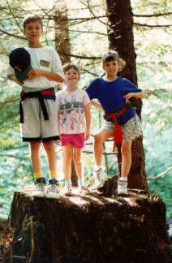
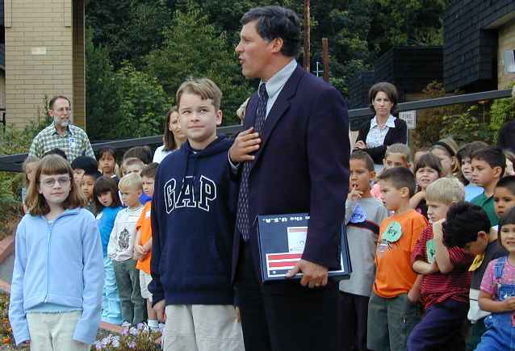
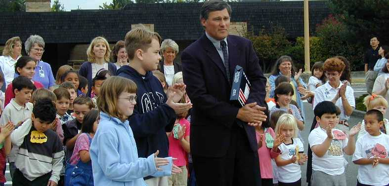
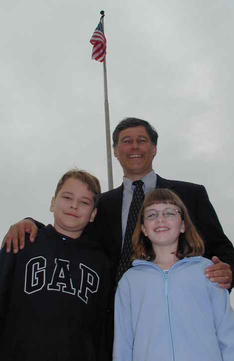

Gary, Cyndi and Pam stumping for votes. Talapus Lake trail in 1994.

Pam and Cyndi log on. Snow Lake, Snoqualmie Pass, summer 1998.

Gary bags his first summit and signs the register. Red Peak (Snoqualmie Pass), 1998.




|
 Gary, Cyndi and Pam stumping for votes. Talapus Lake trail in 1994. |
Pam and Cyndi log on. Snow Lake, Snoqualmie Pass, summer 1998. |
|
Gary bags his first summit and signs the register. Red Peak (Snoqualmie Pass), 1998. |
|